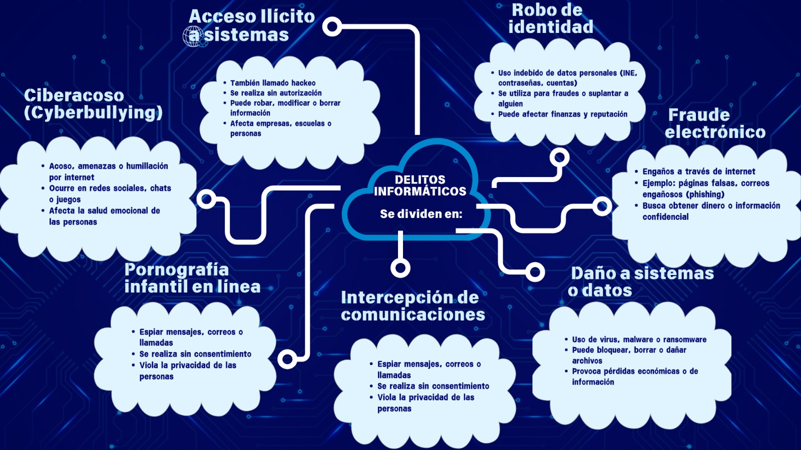

Derecho Informático
Legislación aplicada a la tecnología y páginas web

Legislación aplicada a la tecnología y páginas web
La normatividad informática establece un marco legal, técnico y ético que busca garantizar la seguridad, privacidad y correcto funcionamiento de los sistemas tecnológicos, así como el cumplimiento de estándares internacionales.
Distinción de la normatividad del derecho informático.
Identifica el marco jurídico del derecho informático relativo al manejo de la información y a la función del usuario, conforme a las leyes, normas y principios mexicanos.
El propósito del derecho informático es regular el uso de las tecnologías de la información y la comunicación (TIC), protegiendo los datos, la privacidad de las personas y asegurando que el uso de la tecnología se realice de manera legal, ética y segura.
Porque la tecnología avanza muy rápido y las leyes necesitan analizarse cuidadosamente para evitar errores. Además, se requiere la participación de especialistas, debates, aprobación del gobierno y adaptación a diferentes situaciones, lo que hace que el proceso sea más tardado.
Escolares: Facilitan el acceso a información, clases en línea y herramientas digitales para aprender mejor.
Laborales: Permiten el trabajo remoto, comunicación instantánea y uso de plataformas digitales para mayor productividad.
Relaciones sociales: Han cambiado la forma de comunicarnos mediante redes sociales, mensajes y videollamadas, conectando a personas de todo el mundo.
1. Protección de datos personales
2. Delitos informáticos
3. Comercio electrónico
4. Propiedad intelectual en medios digitales
5. Seguridad informática
6. Uso de internet y telecomunicaciones
La tipicidad es el principio legal que establece que una conducta debe estar claramente definida en la ley como delito para poder ser sancionada. Es decir, no se puede castigar algo que no esté previamente establecido como ilegal.

Es una regla que establece cómo deben comportarse las personas dentro de una sociedad.
Protege las creaciones digitales como música, videos, textos y software. Evita el uso o distribución sin autorización del autor.
Es una norma jurídica obligatoria creada por una autoridad (como el gobierno) que regula la conducta de las personas.
Es la Comisión Nacional de los Derechos Humanos, un organismo que protege los derechos fundamentales de las personas en México.
Son las ideas y principios que regulan el uso de la tecnología, la información digital y los sistemas informáticos. Es la rama del derecho que regula el uso de computadoras, internet y tecnologías digitales para proteger la información y a los usuarios.
Es el conjunto de leyes y reglas que regulan el uso de la tecnología, como la protección de datos, delitos informáticos y comercio electrónico.
El derecho informático se aplica en:
• Protección de datos
• Seguridad de sistemas
• Uso correcto de software
• Control de accesos
Es el proceso para verificar la identidad de una persona (contraseña, huella, código).
Es el permiso que tiene una persona para usar un sistema o información.
Regula relaciones entre personas (contratos, propiedades, responsabilidades).
Se encarga de castigar delitos, incluyendo los informáticos.
por ejemplo:
Estos 6 delitos informáticos
1. Hackeo de cuentas
2. Phishing (robo de datos)
3. Fraude en línea
4. Robo de identidad
5. Ciberacoso
6. Distribución de malware
Es el uso de la tecnología para mejorar procesos legales, como bases de datos jurídicas o sistemas digitales de justicia.
| Tecnología TIC | Año 2016 | Año 2026 | Riesgos |
|---|---|---|---|
| Redes Sociales | Publicaciones básicas | Algoritmos avanzados | Adiccion, exposicion |
| Correo electronico | Uso básico | Automatizado con IA | Pishing |
| Smartphones | Apps simples | Todo integrado | Robo de datos |
| Computadoras | Uso escolar | Trabajo remoto | Malware |
| Almacenamiento | USB/CD | Nube | Filtracción |
| Mensajeria | SMS | Apps con IA | Estafas |
| Videollamadas | Poco uso | Uso diario | Espionaje |
| Educacion Online | Básica | Completa | Dependencia |
| Videojuegos | Offline | Online | Adiccion |
| Streaming | TV | Plataformas | Exceso consumo |
| E-commerce | Limitado | Masivo | Fraude |
| Banca online | Limitada | Apps completas | Robo identidad |
| IA | Inicial | avanzada | Deepfakes |
| El Internet de las Cosas (IoT) | Inicio | Casas inteligentes | Hackeo |
| Wifi público | Común | Extenso | Robo de información |